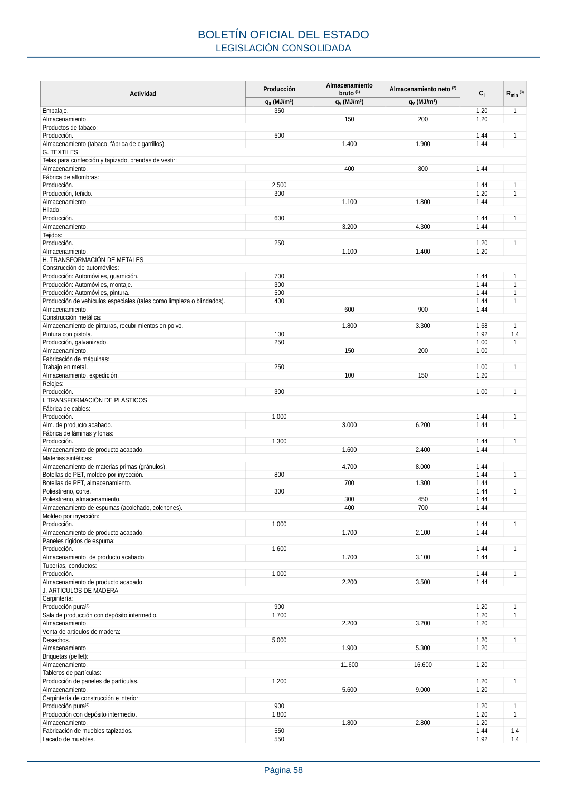

RSCIEI · edición 2025-04-10 · capa asociada
Documento RSCIEI-asociada · SHA-256 del PDF 85aa0af25d51e5b58d8975a4eefbf76d3f57a8933445cfe814ae9c4818a2e3e7
Página física 58 de 108.
Copia fiel del PDF fuente · Fuente oficial
Ficha de la disposición en la fuente oficial
Texto extraído y reorganizado: Basado en datos de la Agencia Estatal Boletín Oficial del Estado. PDF reproducido: Fuente de los datos: Agencia Estatal Boletín Oficial del Estado.
Formato: Texto de la página (Markdown)
Actividad Producción Almacenamiento bruto (1) Almacenamiento neto (2) Ci Rmin (3) qs (MJ/m²) qv (MJ/m³) qv (MJ/m³) Embalaje. 350 1,20 1 Almacenamiento. 150 200 1,20 Productos de tabaco: Producción. 500 1,44 1 Almacenamiento (tabaco, fábrica de cigarrillos). 1.400 1.900 1,44 G. TEXTILES Telas para confección y tapizado, prendas de vestir: Almacenamiento. 400 800 1,44 Fábrica de alfombras: Producción. 2.500 1,44 1 Producción, teñido. 300 1,20 1 Almacenamiento. 1.100 1.800 1,44 Hilado: Producción. 600 1,44 1 Almacenamiento. 3.200 4.300 1,44 Tejidos: Producción. 250 1,20 1 Almacenamiento. 1.100 1.400 1,20 H. TRANSFORMACIÓN DE METALES Construcción de automóviles: Producción: Automóviles, guarnición. 700 1,44 1 Producción: Automóviles, montaje. 300 1,44 1 Producción: Automóviles, pintura. 500 1,44 1 Producción de vehículos especiales (tales como limpieza o blindados). 400 1,44 1 Almacenamiento. 600 900 1,44 Construcción metálica: Almacenamiento de pinturas, recubrimientos en polvo. 1.800 3.300 1,68 1 Pintura con pistola. 100 1,92 1,4 Producción, galvanizado. 250 1,00 1 Almacenamiento. 150 200 1,00 Fabricación de máquinas: Trabajo en metal. 250 1,00 1 Almacenamiento, expedición. 100 150 1,20 Relojes: Producción. 300 1,00 1 I. TRANSFORMACIÓN DE PLÁSTICOS Fábrica de cables: Producción. 1.000 1,44 1 Alm. de producto acabado. 3.000 6.200 1,44 Fábrica de láminas y lonas: Producción. 1.300 1,44 1 Almacenamiento de producto acabado. 1.600 2.400 1,44 Materias sintéticas: Almacenamiento de materias primas (gránulos). 4.700 8.000 1,44 Botellas de PET, moldeo por inyección. 800 1,44 1 Botellas de PET, almacenamiento. 700 1.300 1,44 Poliestireno, corte. 300 1,44 1 Poliestireno, almacenamiento. 300 450 1,44 Almacenamiento de espumas (acolchado, colchones). 400 700 1,44 Moldeo por inyección: Producción. 1.000 1,44 1 Almacenamiento de producto acabado. 1.700 2.100 1,44 Paneles rígidos de espuma: Producción. 1.600 1,44 1 Almacenamiento. de producto acabado. 1.700 3.100 1,44 Tuberías, conductos: Producción. 1.000 1,44 1 Almacenamiento de producto acabado. 2.200 3.500 1,44 J. ARTÍCULOS DE MADERA Carpintería: Producción pura(4). 900 1,20 1 Sala de producción con depósito intermedio. 1.700 1,20 1 Almacenamiento. 2.200 3.200 1,20 Venta de artículos de madera: Desechos. 5.000 1,20 1 Almacenamiento. 1.900 5.300 1,20 Briquetas (pellet): Almacenamiento. 11.600 16.600 1,20 Tableros de partículas: Producción de paneles de partículas. 1.200 1,20 1 Almacenamiento. 5.600 9.000 1,20 Carpintería de construcción e interior: Producción pura(4). 900 1,20 1 Producción con depósito intermedio. 1.800 1,20 1 Almacenamiento. 1.800 2.800 1,20 Fabricación de muebles tapizados. 550 1,44 1,4 Lacado de muebles. 550 1,92 1,4 BOLETÍN OFICIAL DEL ESTADO LEGISLACIÓN CONSOLIDADA Página 58

Datos candidatos: compruebe celdas y notas en el PDF.